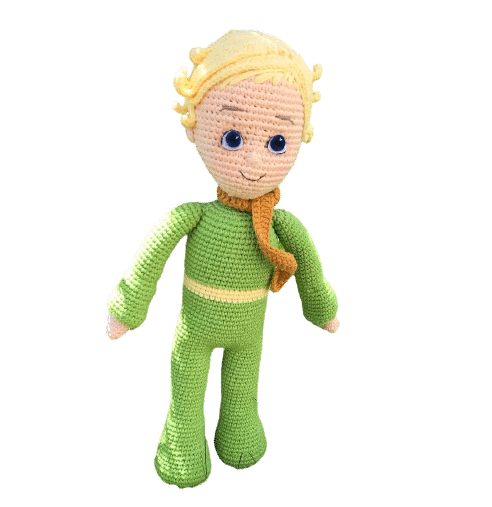

Kullanılan Malzeme ve Kısaltmalar
Malzemeler
- Sarı, Ten, Yeşil(Tercihe Bağlı)/li>
- Kaş ve ağzı işlemek için siyah ip
- 2.5 mm Tığ
- Güvenlikli (kilitli) göz
- Tel (Sabitlemek için)
- Boncuk elyaf
Malzemeler
- SH = Sihirli halka
- O (ZN) = Zincir
- V = ikili Artırma
- W = Üçlü Artırma
- A = İkili Eksiltme
- M = Üçlü Eksiltme
- C (CC) = İlmek kaydırma
- X (SC) = Sık iğne
- BLO = İlmeğin arkasındaki ipe batarak örme
- FLO = İlmeğin önündeki ipe batarak örme
- T (HDC) = Tekli Trabzan
- F (DC) = İkili Trabzan
- F (TR) = Üçlü Trabzan
- VHDC = Aynı Deliğe / yere 2 HDC
- VDC = Aynı Deliğe / yere 2 DC
- Renk Değişimi
- Bitirme
Kafa Tarifi
- Sh içine 6x
- 6v=12x
- (x, v)6=18x
- (2x,v)6=24x
- (3x,v.)6=30x
- (4x,v.)6=36x
- (5x,v)6=42x
- (6x,v)6=48x
- (7x,v)6=54x
- 16. 54x
- 33x, (x,a)*5, 6x=49x
- 19. 49x
- 33x, (x,v.)*5, 6x=54x
- 22. 54x
- (3x, a)*5, 27x= 49x
- (5x, a)7= 42x
- 3x,a, 7x,a, 38x
- (17x,a)*2=36x
- (7x, a)*4=32x
- (3x,a)*3, 17x= 29x
- (3x,a)*2, (8x,a)*2= 25x
- (x,a)*3, (2x,a)*4=18x
- ( x, a)6= 12x
- 6a= 6x
Kulak Tarifi
Sihirli halka içerisine 6x yapıyoruz ve geri dönüyoruz (xs.)*3=9x yapıyoruz(yarım ay şeklinde oluyor. fotoğraftaki gibi kafaya dikiyoruz).
Saç Tarifi
- Sh içine 6x
- 6v=12x
- 12 dcv=24 dc( her sık iğne içine 2 trabzan yapıyoruz)
- 36dc ( bir tek bir çift trabzan şeklinde yapıyoruz
- 48 dc( 2 tek bir çift)
- 60 dc( 3tek bir çift)
- 10. 60 dc
Buklelerin yapımı (10 tane)
25 zincir üzerine 25 yarım trabzan yapıyoruz.
Gözlerin yapımı
Keçeden beyaz, mavi, siyah olacak şekilde uygun boyutlarda kesip mavi olan kesenin etrafına siyah boya ile halka yapılır ve önce birbirine daha sonra kafada uygun bölüme dikilir. ( Beyaz dikiş ipi ile ışıltı vermeyi unutmayın).
Ayakkabı yapımı (2 tane)
- Sh içine 6x
- 6v=12x
- (x,..v)6=18x
- 4-9. 18x
- 11x ör dön
- 11x ör dön
- 11x ör dön
- 11x ör dön
- 11x ör dön
- 11x ör dön
- cc ile birleştir bir zincir çekip bir sıra siyah ile 15 sık iğne ör ( Ayakkabının topuk kısmını iğne ile dikerek kapatıyoruz) ( Burada elyaf doldurmayı unutmayın daha sonra sıkıntı olmasın).
Bacak yapımı (2 tane)
Gövde yapımı
- 1. Bacakları 3 zincir ile birleştiriyoruz
- 2-15. 46x(yeşil)
- 16-18. 46x( sarı)
- 19-32. 46x(yeşil)
- 33. (2x,a )5, 3x, (2x,a)5, 3x=36x
- 34. x, (2x,a)3, 6x, (2x,a)3, 5x= 30x
- 35.(x,a)4, 3x, (x,a)4, 3x= 22x
- 36. x, (x,a)7=15x
Kol yapımı (2 adet)(ten rengi)
- 1. 8 zn etrafına 14x
- 2-8. 14x
- 9. (5x, a).2= 12x
- 10-35.12x ( ara ara elyaf koyabilirsiniz çok sıkı olmamak kaydı ile)
Kazağın kolları (2 adet)(yeşil)
- 1. 25 zn cc ile birleştir
- 2. 25x
- 3. 25x Her sırada bir azaltarak devam ediyoruz
- 4. 24x
- 5. 23x
- 6. 22x
- 7. 21x
- 8. 20x Bundan sonra iki sırada bir azaltıyoruz.
- 9-10.19x
- 11-12.18x
- 13-14.17x
- 15-16. 16x
- 17. 28. 15x
birleştirme aşaması
Kollara kazak kolunu giydirip omuzlardan tüm parçaları dikerek birleştıriyoruz ( kollara tel koymak isteyenler bu aşamada koyabilirler)
Amigurumi küçük prens tarifinin sonuna gelmiş bulunmaktayız, umarım örerken keyif aldığınız bir model olur.
